我在海外 | 眼睁睁地看着巴伐利亚州的“新冠确诊”包围圈对我家越缩越小
原文链接 备份链接 德国罗伯特·科赫研究所RKI所长威勒（Wieler）预计，德国在两三个月内确诊人数将会超过一千万。我不希望这个数字成真，德国并不像国内的社区，有居委会大妈、有网格员关心着你，给你送吃的送喝的，如果诺因基兴镇的食物断货， …
以下文章来源于地球青年图鉴 ，作者地青

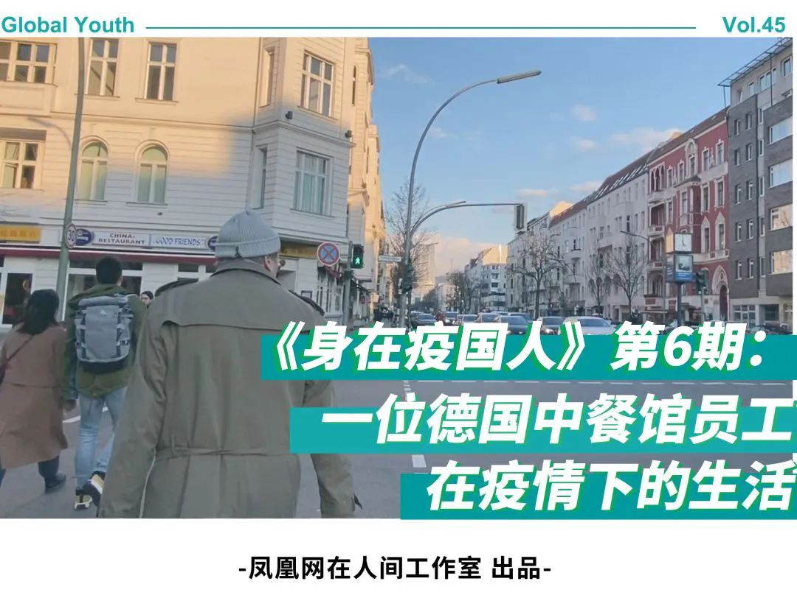
△ “身在疫国人”第6期德国街访完整视频
截至德国当地时间3月18日19点，德国确诊人数有11979人，死亡28人。3月18日，德国总理默克尔发表演讲：“这是二战以来德国面临最大的挑战，接下来几个星期会更加困难。” 3月8日，在柏林留学，并在中餐馆打工的李靖雯作为凤凰网的特约观察员，走上柏林街头，向当地人询问对疫情的看法。
以下是李靖雯的自述。
3月2日，柏林电影节结束的第一天，柏林有了第一例新冠肺炎的确诊病例，就位于我居住的Mitte区。听说后自然一阵惊慌。这时候看到有公众号写：柏林沦陷。
“沦陷”这个词用得人毛骨悚然。
一连几天泡在影院里，远离24小时更新的疫情消息，本来算久违地透了口气，而新冠肺炎在欧洲的传播之迅速，让我再次被这种焦虑攫住了。
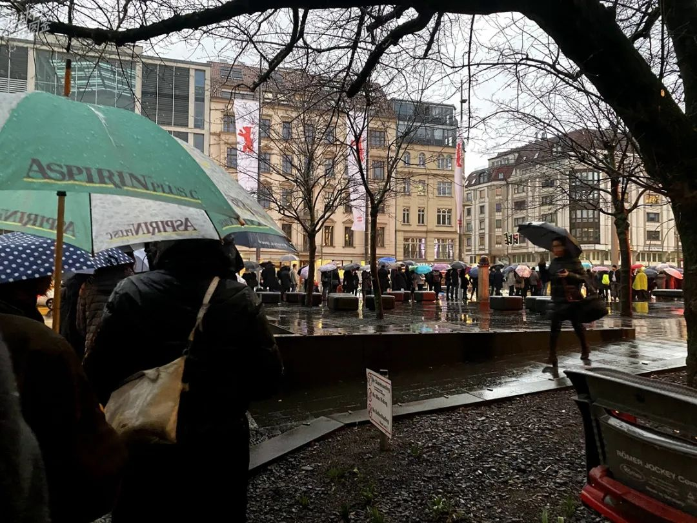
△ 柏林电影节期间（2.21至3.1）， 电影开场前的排队状况
据我观察，德国的形势的确不容乐观，由于疫情通报是实时的，所以确诊病例的数字经常是在一餐饭的期间就增长了几十或几百例。截止3月18日晚上8时，德国已有12327例确诊，大都集中在北威州（Nordrhein-Westfalen）、拜仁州（Bayern）、以及巴登符登堡州（Baden-Württemberg），死亡28例。我在的城市柏林确诊519例，多数患者居家隔离。
 △ 欧洲确诊病例超过9万，德国累计确诊数继意大利和西班牙排列第三。数据来源：Berliner Morgenpost（柏林晨报）
△ 欧洲确诊病例超过9万，德国累计确诊数继意大利和西班牙排列第三。数据来源：Berliner Morgenpost（柏林晨报）
这种速度并不陌生。从第一次在中文媒体上看到关于“不明原因肺炎”的消息，到今天这种疾病蔓延至全球，至我所在的城市和社区，也不过百日。
我不能说是灾难的亲历者，只是在远远地看着它们发生。我总和朋友说，这好像一场放错了的电影。曾几何时，这种齐泽克式的灾难观赏视角和事不关己的感叹让我感到非常羞愧。
然而几周后，我便身在疫区：超市里的厕纸和意面酱空了；朋友圈总是有人准备着回国；学校所有的考试和论文延至夏季；每周光顾的酒馆和影院关闭；欧盟宣布关闭边境；默克尔发表讲话，称此为“二战以来最大的挑战”……

△ 3月17日，柏林一家关闭的电影院
随着疫情的发展，柏林所有电影院以及其他非必要商店已经关闭，每家电影院都在原先放新片名字的位置写着“保重（Bleibt gesund）”。记得《鼠疫》里写过：什么时候算是恢复了正常？也许是影院有新片放映的时候吧。

△ 咖啡馆画的“新冠时期的打招呼方式”
根据最新的规定，咖啡厅或餐厅只能营业至18：00，并且加强消毒工作。这是我家楼下咖啡馆推出的“新冠时期的打招呼方式”，其中给出了“武汉式握手”、“比心”、“屁屁碰屁屁”三个令人迷惑的建议。
在这见证着很多历史性时刻的时候，预料中的恐惧没有发生，更多的是恍惚和麻木。尽管预感到可能会言之无物，我也很想做一些记录，以此来为这场瘟疫的群体记忆做一个无用的注脚。
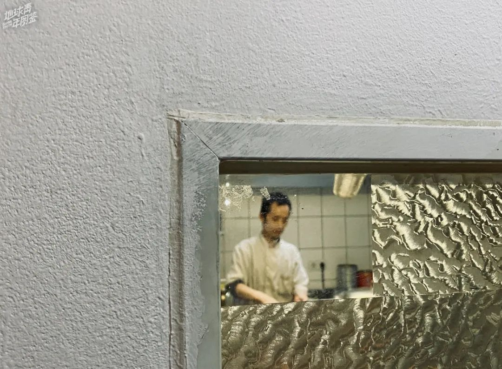
△ 打工的中餐馆的厨房
来到柏林已经半年有余，我在这里念书之余，还一直在一家中餐馆打工。
在这里，我负责制作饮料，清洗杯子和点餐。我喜欢这份工作，我可以边擦杯子，边观察客人，这些时间像是一种区别于日常生活的悬置态。
2020年1月底起，这种状态被打断了，因为疫情几乎成了我和一起工作的同事们闲暇时谈论的唯一话题。同事们大多数来自中国大陆，还有两个女孩，分别来自中国香港和印度尼西亚。

△ 今年2月16日，疫情在德国爆发前两周，我（右1）与中餐馆的同事们合影
在夜里，我们读着同样的华文媒体消息，共享着几乎同步的情绪，第二天来到餐馆，我们互相分享它们。从悲痛到愤怒，再到一些风马牛不相及的争论，旧日的臆测和谣传总是很快翻新，往往讨论都是以一声毫无意义的叹息结束。
每一个被疫情波及到的事件在此时都成了离奇的要闻：有人回国的班机被取消，和航空公司交涉无果，返乡愿望落空；有人不久前回国，返回德国之后自觉足不出户隔离两个星期，只能叫外卖度日；香港的女孩担忧家人的健康，最先开始了在药房和建材商场采购大量口罩的行动，并四处询问寄回国内的途径。
但除此之外，我们好像没有受到什么称得上具体可见的威胁，而更多的是作为旁观者对一个骤然反常的世界的应激反应。而餐馆老板则不同，他的担忧更为具体，更为实在。
2月份起，世界各地排华现象以一个看不见的病毒为名再次抬头，我们也间或听说一些关于在德华人遇袭以及中餐馆倒闭等等真假不明的消息。这对他来说，都是一个个暧昧却危急的警示。
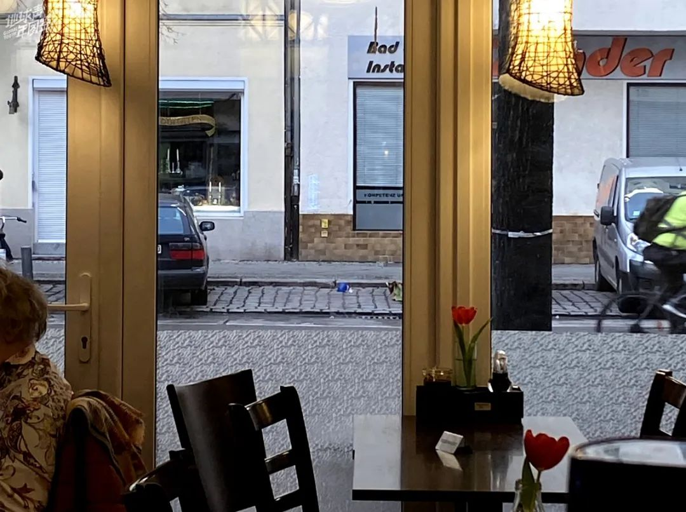
△ 我所工作的一家中餐馆
我们店里大概有六成是德国客人，中国以及韩国客人也很多。通常情况下，从中午到下午三点，再有下午五点到晚上九点，店里都坐满了客人，几乎没有一个空位置。有客人来到笑着抱怨说这里好像一个车站，而不是餐厅。
可以预料得到，自从新冠肺炎在中国盛行的消息流传之后，生意一度萧条。但是很奇怪，消失的大多是中国客人，我记得有一天甚至连一个东亚面孔的客人都没有出现。
相反，德国客人似乎并不被这件事影响而过度紧张，他们仍然照常光顾。有一对经常带着小狗来吃宵夜的老夫妻，每次来都会点百合花茶和小份啤酒，他们会问候我在中国的家人如何。
然而，餐馆客人的减少，即使对于柏林最受欢迎的餐馆之一，也是一个不小的打击。再者，被层出不穷的疫情消息轰炸的我们，人人自危，如同惊弓之鸟，也担忧会有国内来德的感染者不知情地来店里用餐。

△ 我住的公寓的疫情通知
那段时间，老板无奈之下做出了歇业一星期的决定。门口贴出通知，借口说餐厅在整修，向顾客表示歉意。当然，新冠肺炎的事是不能提的，毕竟关于疾病的任何词语，向来会让人产生恐怖的联想。
这次歇业似乎并不必要，期间德国并没有什么坏兆头。一周后重新开工，我们照常上班，人流量也回到了平常的状态，门庭若市。我想，也许是人们都习惯了那种焦虑，也许是人们已经忘记了那些恐怖，总之是好事。

△ 3月8日，柏林亚历山大广场车站
那之后不久，三月初，新冠肺炎在意大利爆发。也不过两三天的时间，欧洲成为疫区，德国的意大利输入型病例也在以极高的速率增长，各州陆续被首例病例点亮。
此时，无论在哪一家药房都已经买不到普通医用口罩了。在亚马逊上，口罩的价格也至少翻了四五倍。记得在国内疫情的起始阶段，也就是1月初，我未雨绸缪去药房买口罩时，价格还仅仅是每只40欧分的平常价格。
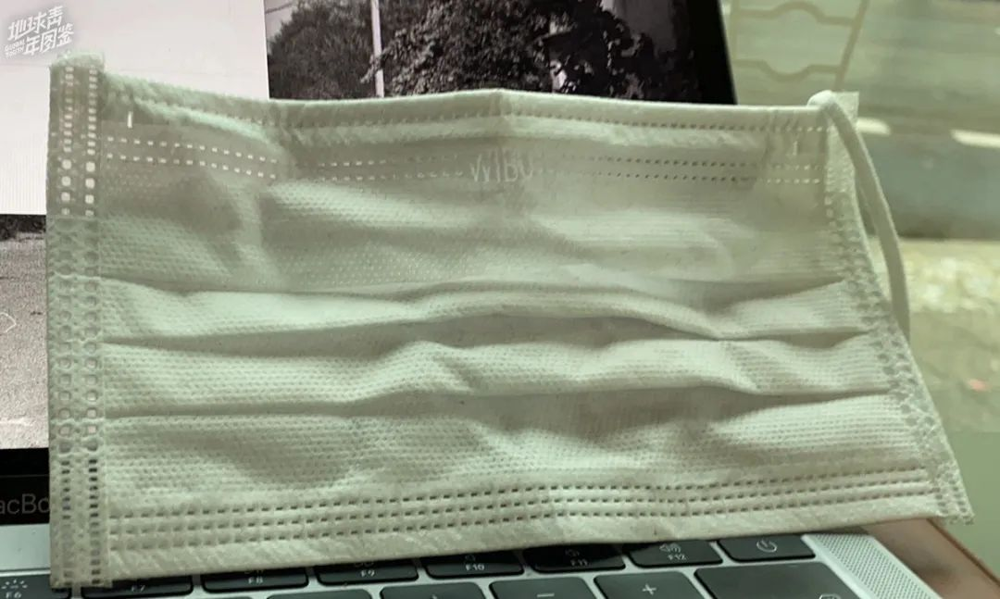
△ 我买到的50欧分的口罩 第二天 同款口罩涨价到1欧元
在柏林尚未有病例的时候，中餐馆的一位客人不知道从哪里获得了口罩的货源，老板和我们员工都各自向他购买了一些口罩，以防疫病在德国爆发。我买了50只，花了25欧元。
在柏林的病例数增加至6例的时候，老板突然给我发信息，委婉地问我假如餐厅再歇业，无法打工，经济上会不会有困难。我说没有困难。我理解老板的担忧。在德国发生的这一切，对于刚刚在网络上目睹过一场类似灾难的在德华人，是极为恐怖的。

△ 中餐馆自主歇业的通知
第二天，老板决定自主歇业，这是柏林第一家因为疫情歇业的餐厅。在餐馆电话的语音留言上，用中英德三语对顾客坦言：“由于新冠疫情已经蔓延到柏林，很遗憾通知大家，我们已经自主歇业了，至于何时营业会另行通知。对此带来的不便，我们深表歉意。”
歇业几天后，餐厅收到一则老顾客的挂念：“您不打算重新开张了吗？老年人和慢性疾病患者是最为危险的。但是这些人并非您的主要顾客。我们能在您歇业时间支持您吗？有捐赠账户吗？我们每天都想念您的餐馆，祝您一切都好。”
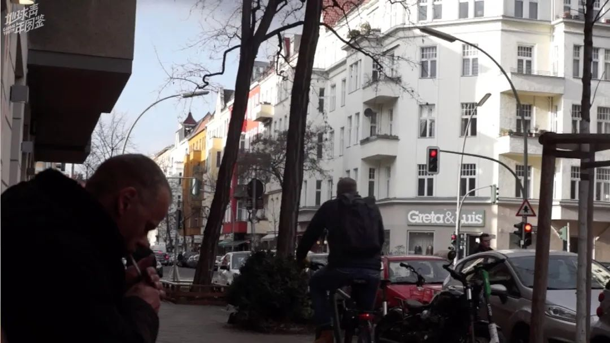
△ 3月8日，柏林威廉皇帝广场。
的确，这样的歇业对于餐饮业来说损失巨大。在关门的前一天，老板把厨房仓库囤下的几十斤蔬菜都免费派发给了店里的员工，避免腐烂。当我问他为何仍然坚持这样做，他向我表达了自己的担忧。
“德国崇拜个人主义，又是个联邦制国家，各地为王，中国的管制手段这边行不通的。我们比较害怕，是德国‘佛系’抗疫政策。他们不提倡别人戴口罩，但不戴口罩怎么去对抗潜伏期无症状的，却也有可能传给其他人的患者。” 他说，“拿生命为代价去讲究自由和尊严，但是很多人是会因此而死的呀。个人的东西在疫病面前可以先放放的。”
老板做了决定：再开业时全体员工无论如何都要戴口罩。有员工回应说，那我们一定会上新闻了。这并不夸张，要知道在这里，戴口罩是一件多么需要勇气的事。

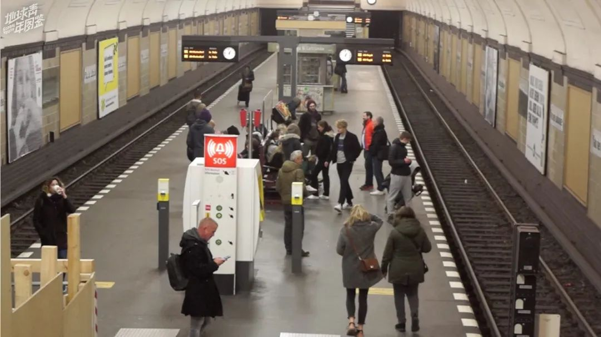
△ 3月8日，柏林地铁
不同于中国这场如此成功的社会动员运动，几天之内让几乎全体中国人自愿戴起了口罩，德国直到现在仍然坚持“口罩无用论”，即使根据“德国钟南山”病毒学家Christian Drosten的悲观预测，全德70%的人都将感染新冠病毒。
在德国主流媒体新闻的科普文章里，对于是否应该戴口罩的回答如下：“不需要戴口罩，大多数人戴口罩无法提供任何防护。简单的纸质口罩几分钟后会受潮，效果不佳。除了口鼻，病毒也可能通过眼睛进入人体。然而FFP1, FFP2, FFP3这样的专业呼吸口罩的确能够提供防护，但是它们戴起来往往让人感到不适，因为日常生活中不需要佩戴。”
对于如何具体防止被感染，官方给出的几个建议仅仅是：与他人保持一米左右的安全距离；打招呼不握手，不拥抱；避免人群聚集；勤洗手，不要乱摸脸；打喷嚏和咳嗽远离他人。

△ 在柏林生活十多年的女士
这种截然不同的防疫方式，让在德国生活和工作的华人感到不可思议。采访到一个在柏林生活十多年的女士，她坦言，“他们不允许你戴口罩，不是不允许，而是你如果戴口罩，他们会觉得很奇怪。这样下去，没有任何防护，一旦爆发后果不堪设想。”
的确，在我采访过程当中，很多华人都表示了相似困惑。疫病袭来，戴口罩什么时候成了一个需要讨论的事情了？在中国，除了年轻人全力以赴劝长辈戴口罩之外，提醒人们戴口罩的雷人标语和口号处处可见，“省小钱不戴口罩，花大钱卧床治病”、“口罩还是呼吸机，您老看着二选一”等等。还记得社交网络上，对于一位女士坚持不戴口罩坐地铁的视频，评论里都是一边倒的责备声音。
然而，在疫情形势严峻的德国，高峰时期柏林地铁上拥挤程度不逊色于北上广，却一个戴口罩的人都没有，也出现了因为有华人带了口罩在路上走，被无缘无故骚扰和嘲笑的情况。

△ 柏林超市 摄影：詹翀
3月8日，我在柏林街头采访当地人的过程中，询问了一些德国人对于戴口罩防疫的看法。有一个年老的德国男士略带嘲讽意味地表示，戴口罩的人看起来“lustig（很逗！）”，他认为那太夸张了，疫情远远没到那个地步。
情理之外，意料之中，接受采访的大部分德国人都与这种意见一致：无畏无惧，乐观防疫。
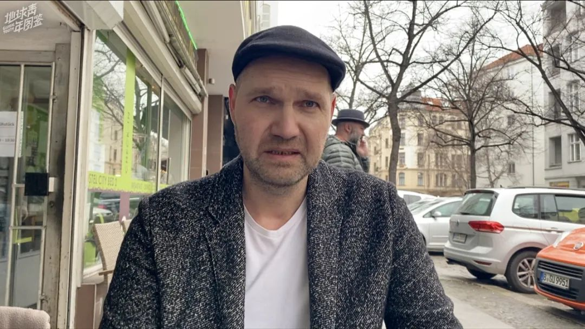
△ 青年旅社管理者
有一位青年旅舍管理者耐心地说服我，为什么戴口罩并不必要。除了新闻上关于戴口罩无用的说辞之外，他还强调说，“因为在中国有大得惊人的人口密度，有好几亿人口，而对我们德国来说，情况根本是两样。我们这里有更少的人口密度，所以也有更小的感染风险。”

△ 生物化学家（右）与他的朋友
采访中，一位化学家将人们对于疫情的反应称之为“恐慌潮（panic wave）”，他说他会尽力不被卷入其中。他认为人们高估了新冠肺炎的严重性，“如果你把它（新冠病毒）和年度流感比较，可能在德国就有2万五千人左右因为流感被感染。但没人会讨论这个流感。因为它只是平常事而已。”
这位化学家的朋友来自中国香港，他也认为该病致死率并不高，所以并没有必要担忧。另外，他也将东西方对于戴口罩态度的差别归因于习惯和文化差异，“在亚洲，人们习惯戴口罩，可能因为空气污染或是普通流感防护。然而在德国人们并不怎么戴口罩，如果你戴了可能会很奇怪。”

△ 3月6日，东柏林的夜店聚集处华莎街
3月6日，一位新冠肺炎确诊病人曾经去过一家夜店Trompete的消息在柏林新闻媒体B.Z爆出，卫生部正在紧急寻找当晚去过那家夜店的其他接触者：“如果您在2020年2月29日星期六去过‘Trompete’夜店，请待在家里不要外出。”
然而，就在此条消息发布的当晚，我来到东柏林的夜店聚集处华莎街（Warschauer Straße）附近，发现在夜店门口排队等待蹦迪的人仍然存在。

△ 3月6日，柏林奥伯鲍姆桥的流浪艺人与跳舞的青年
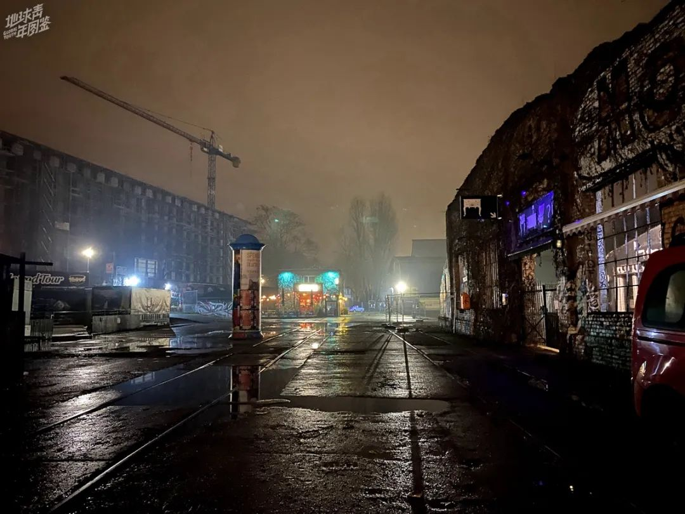
△ 柏林华莎街附近的酒吧区
也看到有很多人在奥伯鲍姆桥上围在一起，伴着流浪艺人的演唱一起手牵手跳舞。我走进一家电影主题的夜店，在舞曲的鼓点带动下，人们毫无顾忌地跳舞，相互间距离几乎为零，一如往常。
这种荒诞的场景，配合柏林的深夜浓雾，颇有些末日狂欢的气氛。想来，避免人群聚集的最大阻碍就是柏林人对于蹦迪的热爱吧。据报道，柏林确诊病例中有42个人都是蹦迪的时候感染的，所幸柏林所有的酒馆和夜店目前已经强制关闭，不过线上狂欢仍在继续。

在柏林街头的这个夜晚，有将近十个人向我推销“好东西”，这本是一件平常事。然而这次有些不同的是，几乎每次拒绝之后对方会送来一句，“再见！coronavirus！”
我没有对病毒免疫，但是对于这种羞辱意味的遭遇已经免疫了。我通常不会感到愤怒，只是会觉得很可笑。我相信这不仅仅是人们所说的“种族歧视”的问题，它还关乎很多很多误解以及由此延伸的无法填补的裂痕。
这段时间以来，我的身份一度成了个大问题。

△ 柏林亚历山大广场
我住在亚历山大广场附近，那是东柏林的中心，也是著名的酒鬼集散地，因此我只要出门心里都惴惴不安，生怕被极端右翼分子袭击或者遇到其他危险事件。
因为身份带来的危险，在我的生活里第一次变得那么具体。我相信这种不安不只是存在于我一个人身上。几乎每一个华人，在世界的每一个地方，都在分享这样的不安。
随着疫情发展，在德国的华人微信群也掀起了许多关于疫情的讨论。有人寻找购买口罩的途径，有人毫不避讳地抱怨和讽刺中国或德国的抗疫举措，甚至有人借此灾难向人们传教。
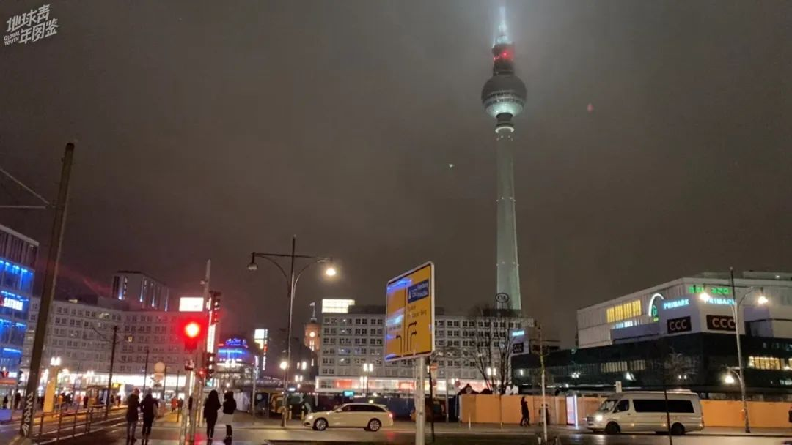
△ 3月8日，亚历山大广场
这段时间以来，我很少参与关于疫情的讨论，不是因为我不关注，而是我总有种感觉，人们谈起它，仿佛在谈论一个遥远国度的奇观。只不过，我们刚好来自那个国度，并且这个异托邦式的荒谬景象如今已经来到了世界的每一处。
而面对这些荒谬，当我想写下一些东西的时候，才发现我对这一切实在知之甚少。不必说那些严谨的数据和事实，即使是门槛最低的个人经验部分，我也常常感到无法诉说。
因为我实在对这一切感到困惑，困惑到有些疲意，我主动隔离语句，因为描述一个我并不明白的事让我感到很不安。我也曾经问过一些年长的人，是否只是我阅历有限，才会觉得对这世界如此困惑。
得到的答案是，人人都对此困惑。
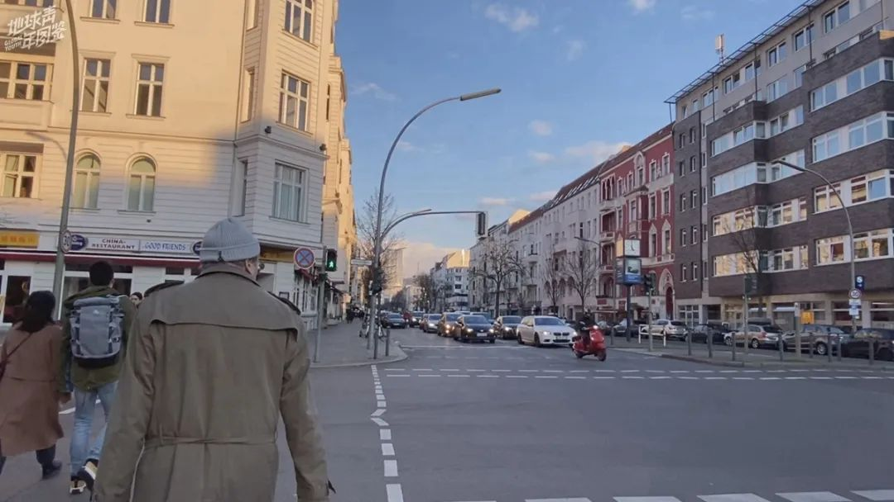
△ 3月8日，柏林康德大街。
在我的记忆里，还从来没有过如此广泛的对疾病的讨论。在异国，被疫情影响最大的是我的睡眠。不知道多少个深夜，祖国仅仅存在于手机屏幕投下的小小一片光亮里，我深陷在潮水般的新闻里面，仿佛亲临其境，不能安睡。与病毒不同，恐惧与绝望情绪的传染往往与距离无关。一种末世氛围之下，抒情尤其不合时宜。
也正因为此，这次具有强烈隐喻意味的事件对人类来说，应该是一次颇为奏效的现实教学。
这个时刻，如果不甘心只是用自己朴素的认识去妄做判断，便可以循着疑惑读些书，尝试去了解这些荒谬背后的结构性原因和渊源；如果不愿被卷入情绪化的旋涡，那就学着多渠道获取实用信息，以此评估环境和安排决策，尽量减少被感染的概率。
想起奥地利女诗人英格堡·巴赫曼（Ingeborg Bachmann）的一首应景的诗《被缓期的时间（Die gestundete Zeit）》，她在第一句就写道：更艰难的日子尚未到来。历史的车轮滚滚向前，而人最重要的是怀有希望。
本篇为地球青年图鉴“身在疫国人”第6期德国篇，后续将带来更多“海外疫国”的报道，请持续关注。
*****除特殊标注，图片均由受访者提供*****
作者 | 李靖雯
*编辑 | 图拉*
实习生 | 易琬玉 邹文昌 匡若彤
凤凰新闻客户端 凤凰网在人间工作室出品
*****全球征稿*****
2020年的开端，注定是全人类记忆里无法抹去的一笔。在宏观的数据面前，个体的经历远比数字来得真实。不管身在何处，这场疫情已成为了人类共同的经历 ，也将成为每一个个体不可磨灭的2020年记忆。
地球青年图鉴现面向所有读者征稿，如果你留下了世界各地疫区见闻的文字、图片、视频，欢迎发邮件至all_photo@ifeng.com。当下即是永恒，期待你的来信。一经采用，会支付相应的稿酬。


新型肺炎疫情牵动人心，
《在人间》现面向全国网友征稿：
（一） 疫区影像日记
如果你身处疫区
请你用照片（视频）和文字记录
你所听闻和见到的一切
照片不少于3张
文字不少于300字
投稿方式：微信联系人间君（zairenjianliving）
（二）抗击疫情真实故事
无论你是一线医护人员、志愿者、
确诊或疑似患者及家属、已治愈出院人士等等，
如果希望讲述疫情相关经历，
请微信联系人间君（zairenjianliving）

原文链接 备份链接 德国罗伯特·科赫研究所RKI所长威勒（Wieler）预计，德国在两三个月内确诊人数将会超过一千万。我不希望这个数字成真，德国并不像国内的社区，有居委会大妈、有网格员关心着你，给你送吃的送喝的，如果诺因基兴镇的食物断货， …
原文链接 备份链接 在疫情爆发前，澳大利亚人宁愿用贵一点的本国厕纸，也不会考虑中国品牌的。 文 | 张惠南 我是上海人，在澳大利亚墨尔本定居已经一年了，经营着当地一家有着二十年历史的社区便利店。每天都和客人聊聊天，喝喝茶，看看报纸，下午 …
原文链接 备份链接 体坛周报全媒体驻德国记者 杨子江 其实早在笔者回德国之前，意大利的疫情已经相当严重了，而国内的疫情已经在相当大的程度上得到了控制。德国很多朋友对我说，“你们先在国内再休整一段时间吧，德国迟早疫情也会像意大利那样蔓延 …
原文链接 备份链接 今天是3月17日，月相为39%的下弦月。 It is March 17 with a 39 percent of Last Quarter. 距离新月还有 7 天。 There are 7 days until New …
原文链接 备份链接 图片来源：图虫 特约作者：钱伯彦 “ 德国所有医保机构年均380亿欧元的支出在欧洲一枝独秀，远超法国的230亿欧元和英国的140亿欧元。 ” 新冠病毒加速肆虐老迈的欧洲大陆。 就公开的确诊数而言，意大利一度超越韩国成海 …